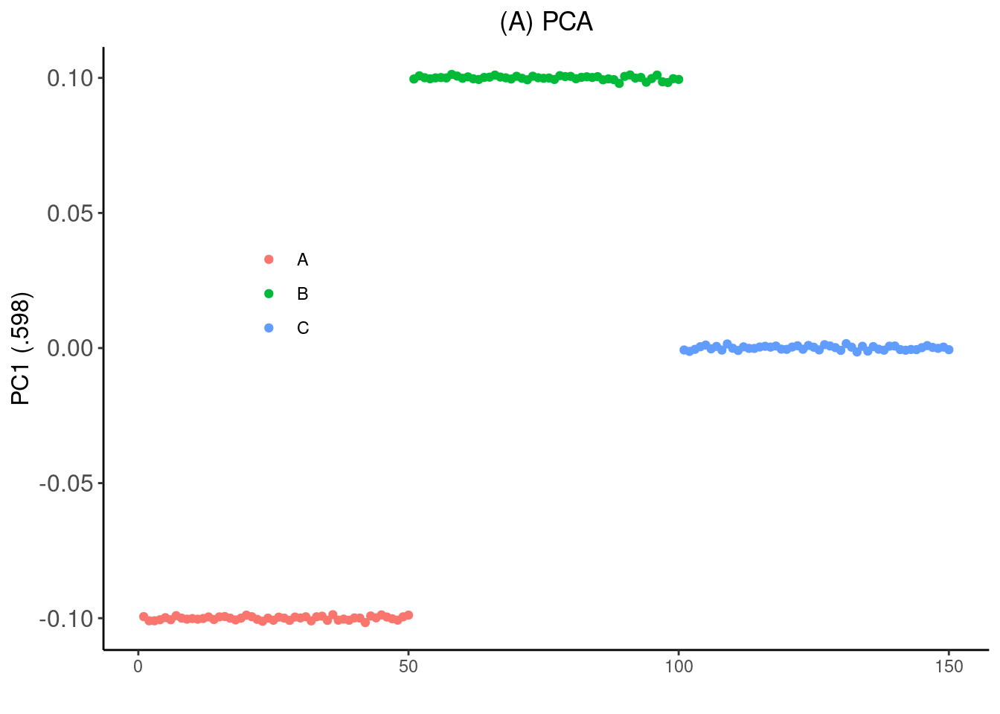
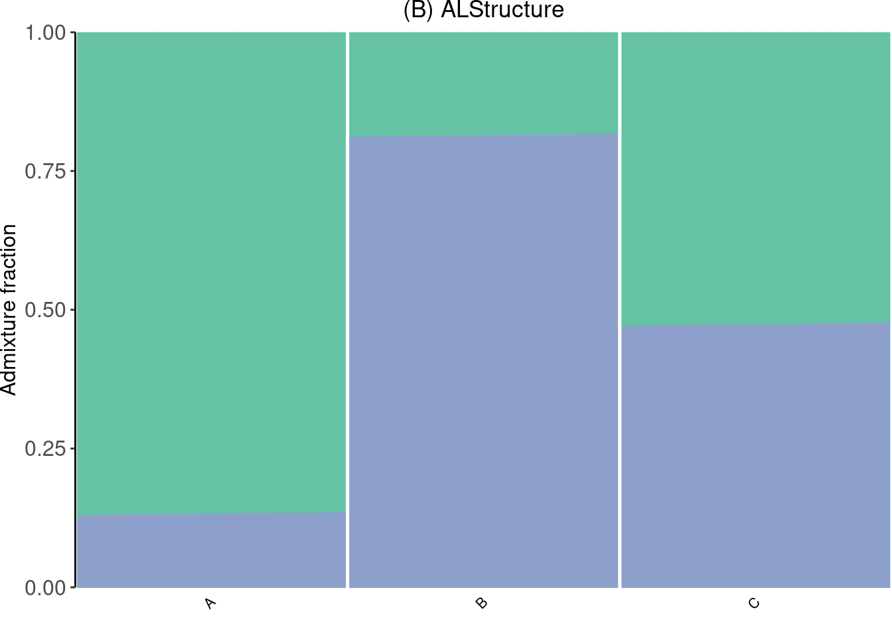
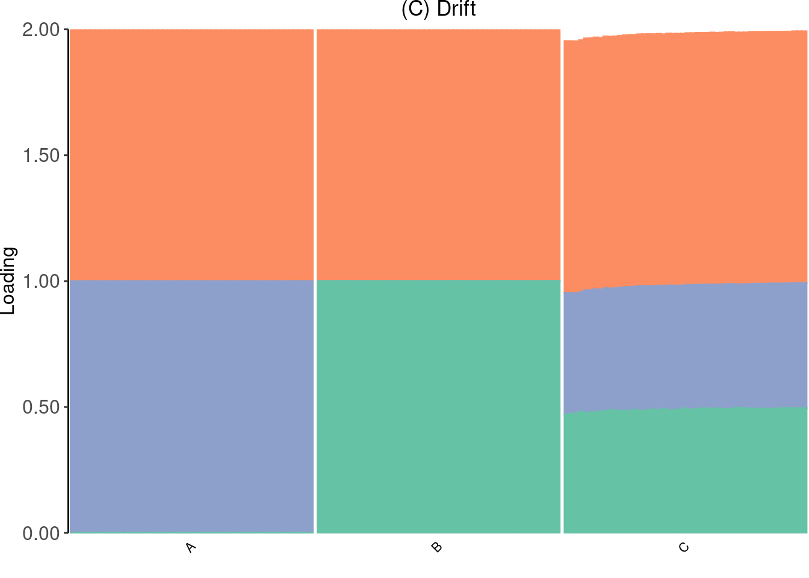
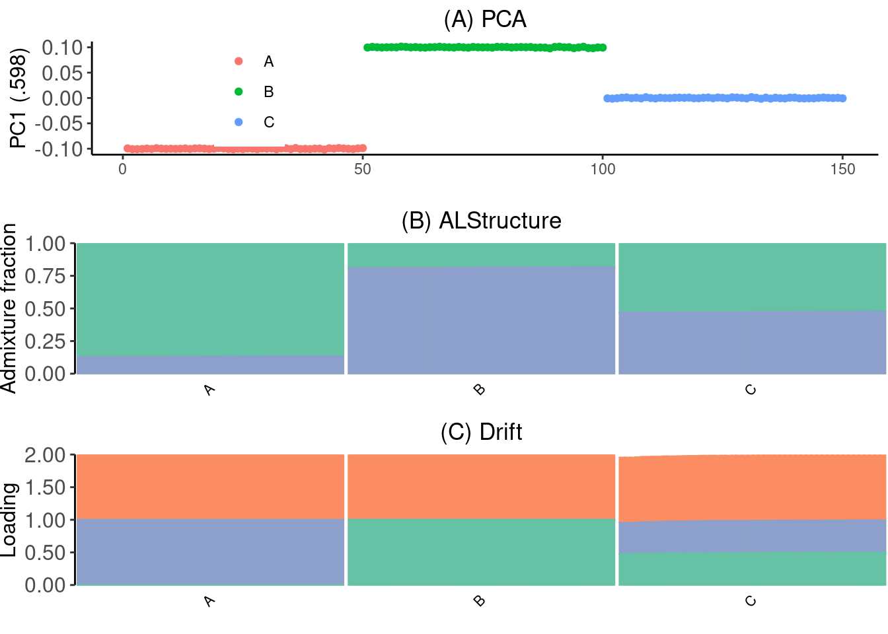

Last updated: 2020-07-14
Checks: 7 0
Knit directory: drift-workflow/analysis/
This reproducible R Markdown analysis was created with workflowr (version 1.6.1). The Checks tab describes the reproducibility checks that were applied when the results were created. The Past versions tab lists the development history.
Great! Since the R Markdown file has been committed to the Git repository, you know the exact version of the code that produced these results.
Great job! The global environment was empty. Objects defined in the global environment can affect the analysis in your R Markdown file in unknown ways. For reproduciblity it’s best to always run the code in an empty environment.
The command set.seed(20190211) was run prior to running the code in the R Markdown file. Setting a seed ensures that any results that rely on randomness, e.g. subsampling or permutations, are reproducible.
Great job! Recording the operating system, R version, and package versions is critical for reproducibility.
Nice! There were no cached chunks for this analysis, so you can be confident that you successfully produced the results during this run.
Great job! Using relative paths to the files within your workflowr project makes it easier to run your code on other machines.
Great! You are using Git for version control. Tracking code development and connecting the code version to the results is critical for reproducibility.
The results in this page were generated with repository version 8bf63c8. See the Past versions tab to see a history of the changes made to the R Markdown and HTML files.
Note that you need to be careful to ensure that all relevant files for the analysis have been committed to Git prior to generating the results (you can use wflow_publish or wflow_git_commit). workflowr only checks the R Markdown file, but you know if there are other scripts or data files that it depends on. Below is the status of the Git repository when the results were generated:
Ignored files:
Ignored: .snakemake/
Ignored: analysis/r1africa1nfb_cache/
Ignored: analysis/test.png
Ignored: data/datasets/
Ignored: data/raw/
Ignored: data/simulations/
Ignored: data/sites/
Ignored: notebooks/.ipynb_checkpoints/
Ignored: output/
Ignored: sandbox/.ipynb_checkpoints/
Unstaged changes:
Modified: analysis/1kg_phase3.Rmd
Modified: code/run_flash_drift_rand.R
Modified: code/structure_plot.R
Modified: snakefiles/flash/Snakefile
Note that any generated files, e.g. HTML, png, CSS, etc., are not included in this status report because it is ok for generated content to have uncommitted changes.
These are the previous versions of the repository in which changes were made to the R Markdown (analysis/figure-simple-sim.Rmd) and HTML (docs/figure-simple-sim.html) files. If you’ve configured a remote Git repository (see ?wflow_git_remote), click on the hyperlinks in the table below to view the files as they were in that past version.
| File | Version | Author | Date | Message |
|---|---|---|---|---|
| Rmd | 8bf63c8 | Joseph Marcus | 2020-07-14 | wflow_publish(“figure-simple-sim.Rmd”) |
suppressMessages({
library(flashier)
library(drift.alpha)
library(tidyverse)
library(alstructure)
library(lfa)
source("../code/structure_plot.R")
})Simulate non-negative genotype data roughly between 0 and 2 using a Gaussian factor analysis model under with three pops A, B, C and C is 50% admixture between A and B:
# specify simulation
n <- 150
p <- 5000
K <- 3
subpops <- rep(c("A", "B", "C"), each=50)
colors <- c("#66c2a5", "#fc8d62", "#8da0cb")
# simulate "genotype data"
a <- 1 + rnorm(p, mean=0, sd=.1)
b <- rnorm(p, mean=0, sd=.2)
c <- rnorm(p, mean=0, sd=.2)
FF <- cbind(a, b, c)
L <- matrix(NA, nrow=n, ncol=3)
L[, 1] <- 1
L[, 2] <- 0
L[, 3] <- 0
L[1:50, 2] <- 1
L[101:150, 2] <- .5
L[51:100, 3] <- 1
L[101:150, 3] <- .5
sd_e <- .1
E <- matrix(rnorm(n*p, mean=0, sd=.05), ncol=p)
Y <- L %*% t(FF) + ERun PCA:
Z <- scale(Y)
pc_res <- lfa:::trunc.svd(Z, d=10)
PC <- pc_res$u
print(pc_res$d / sum(pc_res$d)) [1] 0.58313401 0.04751677 0.04682370 0.04669639 0.04637075 0.04626028
[7] 0.04614121 0.04592766 0.04569024 0.04543900p_pca <- qplot(1:n, PC[,1], color=subpops) +
xlab("") + ylab("PC1 (.598)") +
theme_classic() +
theme(axis.text.y = element_text(size = 12),
axis.title.y=element_text(size=12),
legend.title=element_blank()) +
theme(legend.position = c(0.2, 0.6)) +
ggtitle("(A) PCA") +
theme(plot.title = element_text(hjust=0.5))
p_pca
Run an ADMIXTURE model using ALStructure:
al_res <- alstructure(t(Y), 2)
Q <- t(al_res$Q_hat)
p_admix <- create_structure_plot(Q, subpops, colors[c(1, 3)], c("A", "B", "C")) +
ylab("Admixture fraction") +
ggtitle("(B) ALStructure") +
theme(plot.title = element_text(hjust=0.5))
p_admix
Run drift with random init
set.seed(2000)
EL <- matrix(runif(n * K), ncol = K)
EL[, 1] <- 1
EF <- t(solve(crossprod(EL), crossprod(EL, Y)))
dr <- drift(init_from_EL(Y, EL, EF), miniter=20, maxiter=20,
extrapolate=FALSE, verbose=TRUE) 1 : 479635.883
2 : 786240.483
3 : 1130811.680
4 : 1137561.450
5 : 1137891.162
6 : 1138051.844
7 : 1138138.160
8 : 1138185.703
9 : 1138204.738
10 : 1138214.899
11 : 1138220.815
12 : 1138224.497
13 : 1138226.935
14 : 1138228.658
15 : 1138229.948
16 : 1138230.963
17 : 1138231.788
18 : 1138232.476
19 : 1138233.061
20 : 1138233.563 dr <- drift(dr, miniter=2, maxiter=1000, tol=1e-4,
extrapolate=TRUE, verbose=TRUE) 1 : 1138233.998
2 : 1138234.558
3 : 1138235.139
4 : 1138235.708
5 : 1138236.255
6 : 1138236.783
7 : 1138237.308
8 : 1138237.852
9 : 1138238.239
10 : 1138238.921
11 : 1138239.657
12 : 1138240.300
13 : 1138240.803
14 : 1138240.923
15 : 1138241.167
16 : 1138241.550
17 : 1138242.012
18 : 1138242.471
19 : 1138242.649
20 : 1138242.872
21 : 1138243.154
22 : 1138243.428
23 : 1138243.668
24 : 1138243.816
25 : 1138243.949
26 : 1138244.146
27 : 1138244.361
28 : 1138244.543
29 : 1138244.588
30 : 1138244.710
31 : 1138244.863
32 : 1138245.002
33 : 1138245.100
34 : 1138245.108
35 : 1138245.186
36 : 1138245.296
37 : 1138245.405
38 : 1138245.474
39 : 1138245.492
40 : 1138245.519
41 : 1138245.554
42 : 1138245.601
43 : 1138245.670
44 : 1138245.781
45 : 1138245.936
46 : 1138245.959
47 : 1138245.984
48 : 1138246.004
49 : 1138246.014
50 : 1138246.018
51 : 1138246.023
52 : 1138246.030
53 : 1138246.038
54 : 1138246.049
55 : 1138246.067
56 : 1138246.094
57 : 1138246.107
58 : 1138246.117
59 : 1138246.128
60 : 1138246.134
61 : 1138246.135
62 : 1138246.135
63 : 1138246.136
64 : 1138246.136
65 : 1138246.136 p_drift <- create_structure_plot(dr$EL, subpops, colors[c(2,3,1)], c("A", "B", "C")) +
ggtitle("(C) Drift") + theme(plot.title = element_text(hjust=0.5))
p_drift
Make the figure:
p_grid <- cowplot::plot_grid(p_pca, p_admix, p_drift, nrow=3)
p_grid + ggsave("../output/figures/simple-sim.pdf", width=7, height=6)
sessionInfo()R version 3.5.1 (2018-07-02)
Platform: x86_64-pc-linux-gnu (64-bit)
Running under: Scientific Linux 7.4 (Nitrogen)
Matrix products: default
BLAS/LAPACK: /software/openblas-0.2.19-el7-x86_64/lib/libopenblas_haswellp-r0.2.19.so
locale:
[1] LC_CTYPE=en_US.UTF-8 LC_NUMERIC=C
[3] LC_TIME=en_US.UTF-8 LC_COLLATE=en_US.UTF-8
[5] LC_MONETARY=en_US.UTF-8 LC_MESSAGES=en_US.UTF-8
[7] LC_PAPER=en_US.UTF-8 LC_NAME=C
[9] LC_ADDRESS=C LC_TELEPHONE=C
[11] LC_MEASUREMENT=en_US.UTF-8 LC_IDENTIFICATION=C
attached base packages:
[1] stats graphics grDevices utils datasets methods base
other attached packages:
[1] lfa_1.9.0 alstructure_0.1.0 forcats_0.5.0
[4] stringr_1.4.0 dplyr_0.8.5 purrr_0.3.4
[7] readr_1.3.1 tidyr_1.0.2 tibble_3.0.1
[10] ggplot2_3.3.0 tidyverse_1.3.0 drift.alpha_0.0.9
[13] flashier_0.2.4
loaded via a namespace (and not attached):
[1] httr_1.4.1 jsonlite_1.6 modelr_0.1.6 assertthat_0.2.1
[5] mixsqp_0.3-43 cellranger_1.1.0 yaml_2.2.0 ebnm_0.1-24
[9] pillar_1.4.3 backports_1.1.6 lattice_0.20-38 glue_1.4.0
[13] digest_0.6.25 promises_1.0.1 rvest_0.3.5 colorspace_1.4-1
[17] cowplot_0.9.4 htmltools_0.3.6 httpuv_1.4.5 Matrix_1.2-15
[21] plyr_1.8.4 pkgconfig_2.0.3 invgamma_1.1 broom_0.5.6
[25] haven_2.2.0 corpcor_1.6.9 scales_1.1.0 whisker_0.3-2
[29] later_0.7.5 git2r_0.26.1 farver_2.0.3 generics_0.0.2
[33] ellipsis_0.3.0 withr_2.2.0 ashr_2.2-50 cli_2.0.2
[37] magrittr_1.5 crayon_1.3.4 readxl_1.3.1 evaluate_0.14
[41] fs_1.3.1 fansi_0.4.1 nlme_3.1-137 xml2_1.3.2
[45] truncnorm_1.0-8 tools_3.5.1 hms_0.5.3 lifecycle_0.2.0
[49] munsell_0.5.0 reprex_0.3.0 irlba_2.3.3 compiler_3.5.1
[53] rlang_0.4.5 grid_3.5.1 rstudioapi_0.11 labeling_0.3
[57] rmarkdown_1.10 gtable_0.3.0 DBI_1.0.0 reshape2_1.4.3
[61] R6_2.4.1 lubridate_1.7.4 knitr_1.20 workflowr_1.6.1
[65] rprojroot_1.3-2 stringi_1.4.6 parallel_3.5.1 SQUAREM_2020.2
[69] Rcpp_1.0.4.6 vctrs_0.2.4 dbplyr_1.4.3 tidyselect_1.0.0